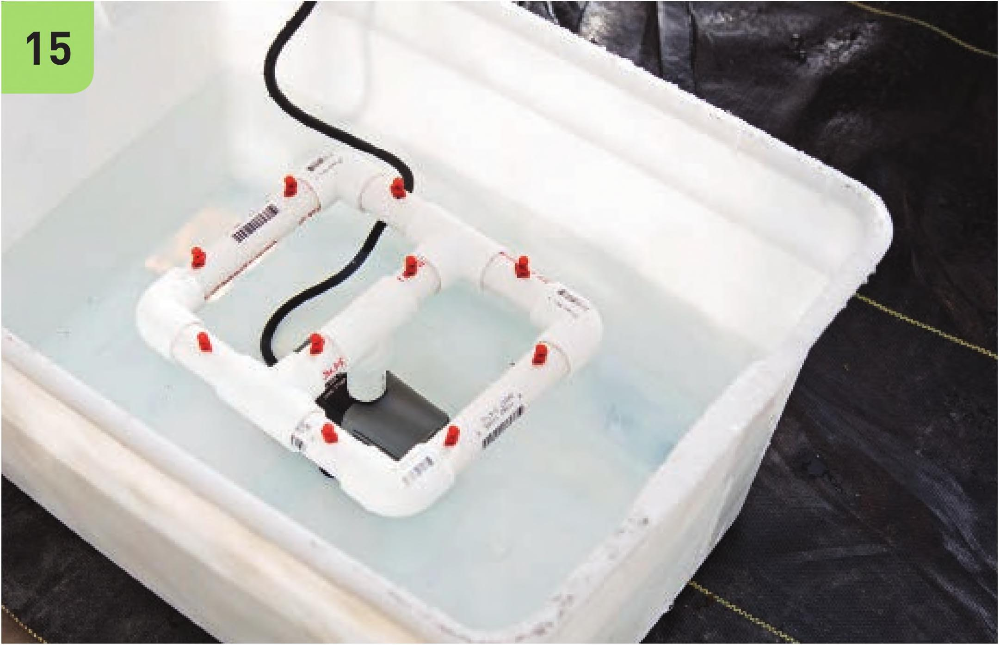
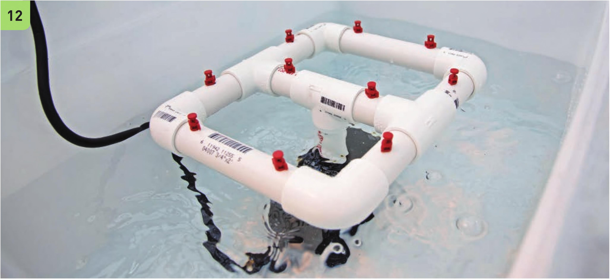

16 * * A f \ 14 Drill holes at the marked spots with the 1 1/64,‘ drill bit. Twist the 360° misters into the drilled holes. 15 Place the fully assembled irrigation manifold and pump in the center of the reservoir. Fill the reservoir with water. Do not fill over the height of the misters. 16 Place the lid on the reservoir and plug in the pump. Check the distribution of the misters to make sure all plant sites receive water. HYDROPONIC GROWING SYSTEMS 113


